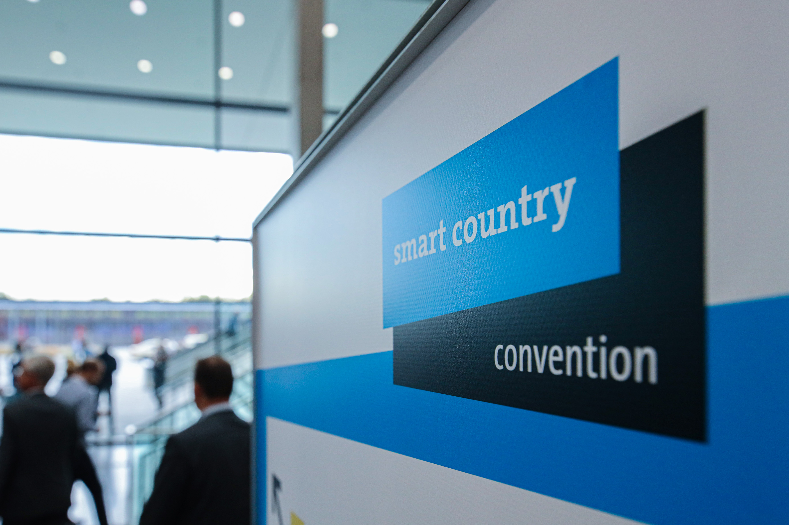
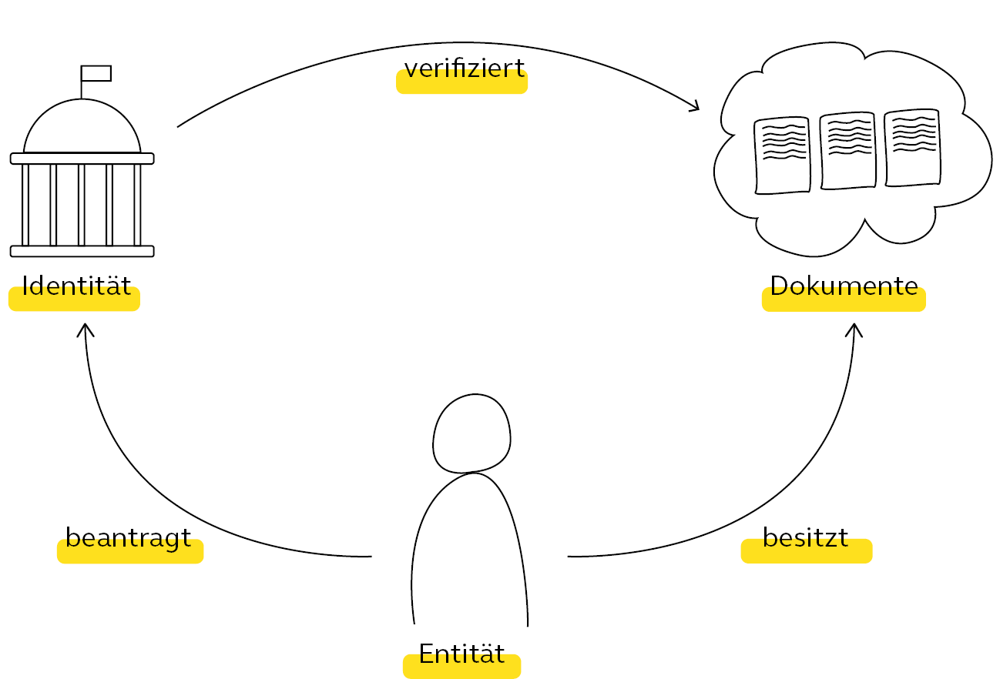
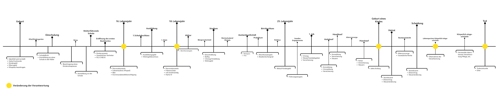
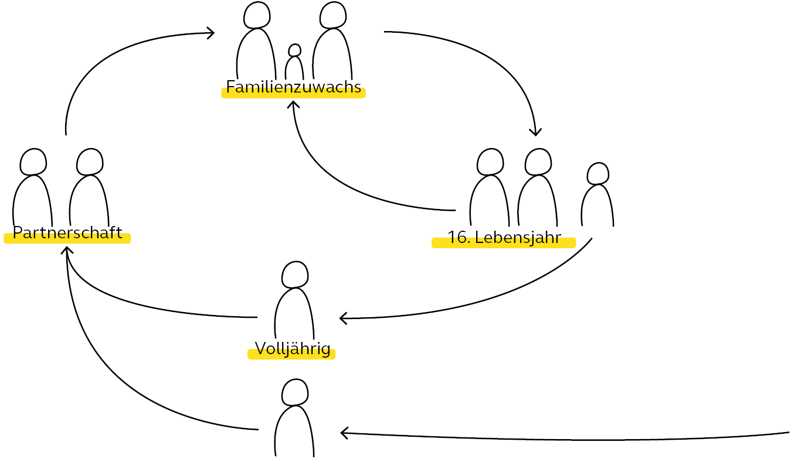
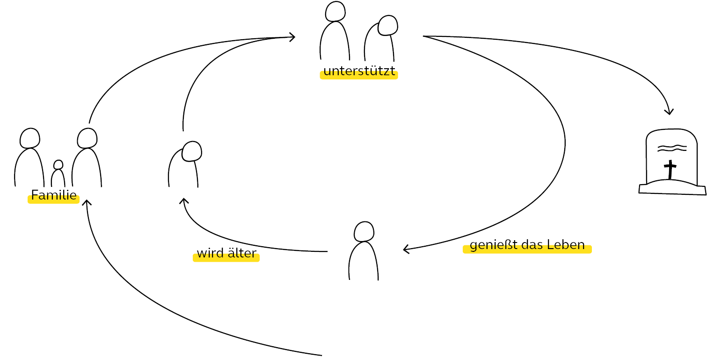
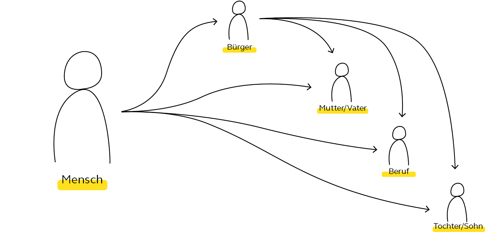
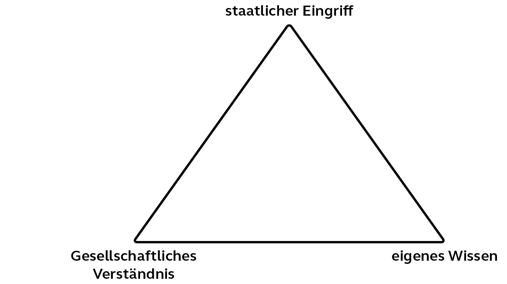
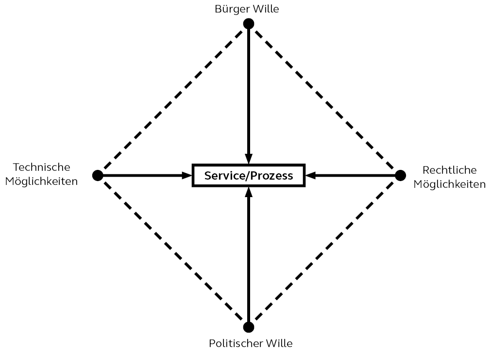

Durch den förderalen Aufbau des deutschen Staates ist es nicht einfach einen geeigneten Lösungsansatz für die Digitalisierung der Verwaltungsleistungen zu finden. Die Idee eines einheitlichen Bausteinssystems von Verwaltungsleistungen, das alle benutzen können erscheint als sinnvoll. Um eine konkrete Übersicht über den aktuellen Stand der Digitaliserung zu erhalten, habe ich die Smart Country Convention ( kurz SCC ) in Belrin besucht. Die SCC ist eine Fachbesuchermesse für die Digitalsierung des öffentlichen Raums. Über 3 Tage werden Vorträge und Workshops gehalten. Außerdem kann man sich bei den verschiedenen Ministerien über den aktuellen Fortschritt in der Digitaliserung informieren.

Wer oder was mach mich zum Bürger ?
Wie viel Eigenverantwortung möchte ich übernehmen ?
Welche Berührungspunkte habe ich mit dem Staat ?
Das Thema Macht spielt in dem Spannungsverhältnis zwischen Bürger und Staat eine zentrale Rolle. Der Duden hat eine Vielzahl von Definitionen für Macht. Die passendste an dieser Stelle lautet:
„mit dem Besitz einer politischen, gesellschaftlichen, öffentlichen Stellung und Funktion verbundene Befugnis, Möglichkeit oder Freiheit, über Menschen und Verhältnisse zu bestimmen, Herrschaft auszuüben (Dudenredaktion (o.J.) 2019).“
Jedes Machtverhältnis besteht demnach aus einem Sender-Empfänger-Prinzip. Dies steht in Abhängigkeit von den Vorstellungen und Bedürfnissen der Quelle, daher kann diese Beziehung auch als ein dynamischer Prozess aufgefasst werden (Schneider 2019). Das bedeutet aber nicht, dass die Macht einen unidirektionalen Charakter besitzt. Sie ist viel eher als ein Wechselspiel zwischen den Parteien zu begreifen. Das setzt einen bidirektionalen Kanal voraus, über den sich die Machtverhältnisse verschieben lassen bzw. sich gegenseitig beeinflussen. Schneider nennt in seinem Essay eine Vielzahl von Möglichkeiten, Macht auszuüben. Die offensichtlichsten sind Zwang und Legitimation. Macht durch Zwang bedeutet, dass der Machtinhaber seine Vorstellungen und Bedürfnisse durch Bestrafung durchsetzt. Hingegen ein auf Legitimation beruhendes Machtverhältnis kann auf Vereinbarungen basierenden Rechtes beruhen (Schneider 2019). Aus diesen einzelnen Machtgrundlagen lassen sich komplizierte Machtkomplexe zwischen Quelle und Ziel schaffen. Daraus folgt, dass über alle sozialen Strukturen ein Machtgeflecht gespannt ist. Dieses Geflecht unterliegt einer ständigen Veränderung und Neugewichtung (Anter 2017, S. 13). Dabei gibt es unterschiedliche Auffassungen, wo die Macht genau verankert ist.
„Nur wo Leben ist, da ist auch Wille: aber nicht Wille zum Leben, sondern – so lehr ich's dich – Wille zur Macht!“ Mit diesem Satz brachte Friedrich Nietzsche eine Ansicht ins Spiel, die bis heute kontrovers diskutiert wird. Nietzsche bringt den Begriff Macht in direkten Zusammenhang mit dem Leben. Seine Ansicht kann auf unterschiedliche Weise interpretiert werden. Beispielsweise haben die Nationalsozialisten seine Thesen dazu genutzt, ihre Weltanschauung zu untermauern und die Ausübung von Macht zu Gunsten der Herrschenden zu sichern. Auf der anderen Seite kann daraus auch geschlossen werden, dass jedes Individuum den Willen besitzt, nicht nur zu leben, sondern auch zu entscheiden, wie gelebt werden soll. Er begreift Macht in meinen Augen als Selbstbestimmtheit.
Eine andere Position vertritt Max Webers. In seinen Augen beschreibt sich die Macht nicht durch das Innehaben einer Position, daher kann man sie weder „haben“ noch „besitzen“. Die Macht kommt erst im Handeln selbst zum Tragen. Für ihn ist die Macht soziologisch amorph. Also eine asymmetrische Handlung, die durch „alle denkbaren Qualitäten eines Menschen und alle denkbaren Konstellationen“ zur Willensdurchsetzung führen kann (Anter 2017, S. 56). Sie ist also vergleichbar mit einer „Chance“ die vom Menschen nur genutzt werden muss. Ähnlich sieht es auch Hannah Arendt; sie sieht in ihr einen „potentiellen Charakter“, der sich durch soziales Handeln innerhalb von menschlichen Beziehungen äußert. Das Phänomen ist permanent präsent, jedoch nicht als eine Konstante die im Besitz des Einen ist, sondern nur in dem Moment der Handlung zu Tage kommt (Anter 2017, S. 94–95). Diese Potentialität ist im sozialen Handeln fest verankert und ist kein Ding, was durch Reichtum gesichert werden kann. Vielmehr hängt es von der Organisationstruktur der Menschen ab. Organisierte kleine Gruppen haben nach ihrer Ansicht ein höheres Potential für die Durchsetzung ihrer Interessen, daher kommt es immer wieder dazu, dass Wenige über Viele herrschen. Auch hier teilen Weber und Arendt die gleichen Ansichten, wenn es aber um die Form der Ausübung von Macht geht, unterscheiden sich ihre Auffassungen sehr stark. Weber sieht beispielsweise die Gewalt als eine elementare Form der Machtausübung. Arendt widerspricht der Idee Webers. Gewalt ist für sie der Ausdruck von Machtlosigkeit und damit gibt es keinen Zusammenhang zwischen Macht und Gewalt. Dies versucht sie an Beispielen europäischer Terrorzellen wie der RAF oder der IRA zu festigen. Jedoch war ihre Theorie nicht standhaft genug, um zu einem allgemeinen Konsens erhoben zu werden. Was sich jedoch daraus schließen lässt ist, dass Gewalt die unterste Form der Machtausübung ist, da sie gleichzeitig alle anderen Formen obsolet macht.
Während Weber und Arendt die Blicke meist auf das menschliche Geflecht richteten, hat Foucault die Machttheorie aus einer anderen Perspektive betrachtet. Dabei stellt er selbst keine konkrete Machtdefinition auf. Er demonstriert vielmehr das Wesen der Macht als ein konstitutionelles Prinzip anhand von Institutionen, wie Gefängnissen und Psychiatrien. Dabei befasst er sich intensiv mit der Gesellschaft des 18. und 19. Jahrhunderts. In seiner Analyse prägt er den Begriff der Disziplinargesellschaft.
Mehr Lesen
In der Philosophie bescheibt die Entität das Wesen selbst. In diesem speziellen Fall also den Menschen. Die Identität hingegen beschreibt die Charakterisierung von Personen im gesellschaftlichen Raum. Auf rechtlicher Ebene wird die Identät bei der Geburt beantragt. Der Saat verfügt in diesem Fall über die Macht zu Entschieden ob Entität eine rechtliche Identität bekommt. Dies wird durch Dokumente und Registereinträge verifiziert. Die Dokumente befinden sich in der Regel im Besitz der Entität, allerdings sind diese ohne Verifikation des Staates nichtig. An dieser Stelle werden zwei Punkte deutlich, auf der einen Seite begibt sich der Mensch in die Abhängigkeit staatlicher Strukturen. Auf der anderen Seite kann dem Menschen auch eine Sicherheit garantiert werden.

Als Mensch durchläuft man unterscheidliche Phasen in seinem Leben. Jede dieser Phasen ist wird unterschiedlich wahrgenommen und haben Konsequenzen auf die folgenden Lebensabschnitte. Aber welche Phasen sind für den Bürger und dem Staat von besonderer Bedeutung?
Anhand des Zeitstrahls lässt sich aus machen welche Phasen von besonderer Relevanz sind. An erster Stelle steht die Geburt, sie ist der Startpunkt für jeden Menschen im sozialen als auch im bürokratischen Kontext. Der nächste wichtige Schritt der für den Staat von Beduetung ist, ist die Vollendung des 16. Lebensjahres. Die*Dem noch junge*n Bürger*in wird aus rechtlicher Sicht neue Freiheiten gewährt. wie das Trinken von Bier oder das Fahren von kleinen Fahrzeugen wie Mofas. Darüberhinaus erhält sie*er auch mehr Verantwortung. Dazu zählt die Ausweispflicht, die Wahlberechtigung für Kommunalwahlen und das Aussagen unter Eid. 2 Jahre später mit 18 Jahren wird jede*r als vollstraffähig angesehen, darf selbstständig Autofahren, Firmen gründen oder auch Hartz IV beziehen. Auch hier erhält man gegen über dem Staat neue Freiheiten, als auch neue Verantwortungen.
Die nächsten großen Punkte die von wesentlicher bedeutung sind, sind die Heirat, die Geburt des eigenen Kindes, sowie die Pflege und Unterstützung von Familienmitgliedern. Be jedem dieser Ereignisse übernimmt man als Mensch Verantwortung gegenüber der betreffenden Person, dies gilt im gesellschafltichen und im rechtlichen Sinne. Als letzten relevanten Schritt folgt der Tod. Nach diesem Zeitpunkt garantiert der Staat die Rechtssicherheit des Testamentes und kümmert sich gegebenfalls um die Verwaltung des Erbes.

Aus dieser Ansicht lassen sich mehrere Erkenntnisse ableiten. Anhand der Zeitleiste lassen sich zwei Zyklen von Verantwortungsveränderungen beschreiben. Der erste beschreibt die Aufnahme in die Gesellschaft und der zweite die Verabschiedung aus gleicher. Dabei gibt es natürlich eine Vielzahl von Möglichkeiten wie dieser genau abläuft, daher sind die beiden aufgezeigten nur exemplarisch und zeigen den grundlegenden Verlauf.
Kommt es in einer Partnerschaft oder Ehe zu Familienzuwachs in Form eines Kindes, ist der Ablauf ein durch den Staat vorgeschreiben. Zu Anfang übernehmen die Eltern die Verantwortung. Mit Zeit übernimmt der junge Mensch immer mehr Verantwortung von seinen Eltern aber auch von der Gesellschaft. Mit 16 Jahren erreicht er eine Transferzeit. In dieser Zeit wird der Person neue Verantwortung übertragen, gleichzeitig genießt er immer noch die Sicherheit der Eltern und ist noch nicht voll straffähig. Es ist in etwa wie eine zweijährige Testsphase. Mit der Vollendung des 18. Lebensjahres hat die Person alle Voraussetzungen, die nötig sind, um den Kreislauf in einer anderen Rolle zu durchlaufen.


Zu einem späteren Zeitpunkt im Leben können sich die Lebensumstände ändern und man benötigt die Hilfe seiner Kinder oder anderen Verwandten. In diesem Fall übernimmt man ähnlich wie bei seinen Kindern wieder Verantwortung für eine weitere Person. Man unterstütz sie im alltäglichen Leben oder ist die gesetzliche Vertretung in rechtlichen Angelegenheiten. Diese Unterstüzung kann unter Umständen erst am Lebensabend eines Menschen enden.
Wie sich an den Idetitätszyklen erkennen lässt durchläuft jeder Mensch im Laufe seines Lebens verschiedene Identitäten oder übernimmt mehrere zur gleichenzeit. Dabei stehen die einzelnen Identitäten in Abhängigkeit zu einander. Die eine bedingt die andere, allerdings steht die Rolle des Bürger über allen, da nur sie die Macht hat jede andere Identität zu verifizeren. Jedes Dokument, das uns als rechtliche Person beschreibt wird durch das System des States beglaubigt.

Govermentalität
Die Wortschöpfung Governmentalität („gouvernementalité“) setzt sich aus zwei Teilen zusammen: „gouverment“ und „mentalité“. Im Deutschen würde es eins zu eins übersetzt Regierungsmentalität heißen. Dieser Begriff wurde von Foucault zum ersten Mal in seiner Vorlesungsreihe Sicherheit, Territorium, Bevölkerung definiert. Er umfasst den Mechanismus oder auch Handlungsmodus, wie sich Staat und Bevölkerung gegenseitig beeinflussen. Es meint nicht die Übermacht des Staates, sondern die Techniken des Regierens, die die Zuständigkeiten des Staates definieren. (KRASS kritische assoziation)
Georg Jellinek hat Anfang des 20. Jahrhunderts den Staat in folgende drei Elemente unterteilt: Staatsgebiet, Staatsvolk und Staatsgewalt (Jellinek 1905). Das Staatsgebiet umfasst das Territorium auf dem die Bevölkerung lebt. Die Staatsgewalt wirkt sich sowohl auf das Territorium als auch den Menschen aus. Sie definiert so den sozialen und politischen Handlungsrahmen einer Gesellschaft und wirkt sich zusätzlich auf all jene aus, die sich in dem definierten Territorium bewegen. Ausgehend von dieser Theorie ergibt sich durch die einzelnen Parameter eine Hierarchie. Wer oder was auch immer die Regeln der Staatsgewalt bestimmt, definiert das gesellschaftliche Handeln des Volkes. Die Politik übernimmt dabei die Rolle diese Regeln festzulegen, zu steuern und zu kontrollieren. Sie umfasst alle Handlungen zur Herstellung einer Ordnung. Nach Foucault gibt es dabei keine klare Trennung von privat und politisch, da sich die Strukturen bis ins privat Leben ziehen. Er sieht Politik als ein Machtverhältnis, das sich aus administrativen Institutionen und Selbststeuerung von Individuen zusammensetzt, das durch ein „kollektiven Handlungsmodus“ definiert wird.
Mehr Lesen
Wissensgesellschaft
Das Konzept Wissensgesellschaft wurde durch die Studie von Daniel Bell „The Coming of Post-Industrial Society. A Venture in Social Forecasting“ von 1973 populär. Es beschreibt den Wandel weg von einer Industriegesellschaft, die durch Hierarchie und Sachkapital geprägt ist, hin zu einer Gesellschaft deren Kapital das Wissen ist und nicht mehr direkt durch Herrschaftspositionen geprägt ist, sondern sich selbst reguliert. Damit ändern sich auch die Ansprüche an die Individuen, um in dieser Art der Gesellschaft zu bestehen.
Sie erfordert sich lebenslang fortzubilden und jederzeit diskussionsbereit zu sein (Junge 2015). Ohne die Bereitschaft der Auseinandersetzung mit Informationen ist man in der Wissensgesellschaft verloren. Diese Feststellungen decken sich mit der Erkenntnis Nietzsches und Faucoults. Wer über die Macht verfügen, möchte sein Leben selbst zu bestimmten, der muss nach ihr streben. Das bedingt in der heutigen Gesellschaft den Willen zum Wissen. Das Machtpotential scheint also eng mit dem Gefühl der Selbstbestimmtheit verzahnt zu sein. Die Kontrollgesellschaft erscheint als logische Folge der Disziplinargesellschaft mit Blick auf den industriellen Umbruch. Aber lässt sich die Wissensgesellschaft als ein weiteres Produkt dieser Entwicklung betrachten?
Seit dem Text von Deleuze sind fast drei Jahrzehnte vergangen. Er ist kurz vor der Etablierung des Internets entstanden, die von einigen als die nächste industrielle Revolution bezeichnet wurde (Schmid und Anderson 2013). Hierbei handelt es sich um einen Meilenstein, der unsere heutige Auffassung des Begriffs Wissensgesellschaft geprägt hat. Es hat den Wissens- und Informationsaustausch zu einem zentralen Bestandteil unseres täglichen Lebens gemacht. Daraus resultiert, dass sich die von Deleuze genannte Schlange nicht mehr nur auf die Gesellschaft auswirkt, sondern die Unternehmen, die sich selbst in der herrschenden Rolle sahen, nun mehr und mehr auch diesen Kontrollmechanismen ausgesetzt werden. Das Wechselspiel der Macht in den Handlungen der Partizipierenden ist also noch einmal komplizierter geworden. Die nicht endende Vernetzung verzahnt jedes einzelne Subjekt, egal welcher Form miteinander. Es unterwirft sich damit dem Kontrollmechanismus der Gesellschaft. In diesem Sinne haben sich die Grenzen zwischen Institutionen als abgeschlossene Systeme vollständig aufgelöst. Sie agieren nur noch als Mikrokosmos, aber immer unter den Augen der gesamten Gesellschaft. Das Wissen bildet damit einen Hybriden aus Disziplinierung und Kontrolle. Damit hat sich die Schlange zu einer Spinne entwickelt, die ein allumfassendes Netz gespannt hat.
Mehr Lesen
Partizipation
Partizipation ist ein Instrument, das in der gegenwärtigen Gesellschaft dazu dient, um die Souveränität des Einzelnen zu sichern in dem es Möglichkeiten gibt Lebenssituationen mitzugestalten. Auf staatlich politscher Ebene kann sich dies durch die Teilnahme an Bürgerforen oder Arbeitsgruppen wiederspiegeln. In Unternehmen mit flachen Hierarchien wird mehr Mitbestimmung und Eigenverantwortung von Arbeitnehmern gefordert. Gleichzeitig sorgt es sie für eine nachhaltige Legitimation der Strukturen, da durch Teilhabe die Akzeptanz gestärkt wird. So hat die Partizipation sich in vielen Bereichen als qualitätssicherndes Tool behauptet.
Mit der Einführung der Kunstgewerbeschulen, wie dem Bauhaus und der damit folgenden Professionalisierung von Designer*innen gab es erste Gedanken zur nutzerorientierten Gestaltung. Dafür wurden die Interessen einer*eines durchschnittlichen Alltagsnutzers*in beleuchtet. Allerdings wurden die Objekte am Ende nicht nach den Nutzerbedürfnissen gestaltet, sondern nach formalästhetischen Gesichtspunkten. Dies äußert sich zur Zeit des Funktionalismus vor allem durch die Architektur. Im Großen und Ganzen kann behauptet werden, dass alle Großprojekte des Funktionalismus gescheitert sind. Den Bauten fehlte die Legitimation und vor allem der Identifikation durch die Gesellschaft. Die durchgestalteten Wohnsiedlungen entwickelten sich dadurch schnell zu Problemteilen einer Stadt. Die HFG Ulm führte die Idee des Bauhauses in gewisser Weise fort und entwarf das „System“. Die Idee dahinter war ein gesamtheitliches Konzept. Es wurden nicht nur die allgemeinen Bedürfnisse in Betracht gezogen, sondern es wurde im Kontext des Problems nach Antworten gesucht. Jedoch immer noch ohne direkten Einbezug der Bevölkerung. Der Soziologe Lucius Burkhardt bezeichnete es als paradox, dass die Öffentlichkeit kein Mitbestimmungsrecht an der Gestaltung des Stadtbildes hat (Mareis et al. 2014, S. 11). In den 1960 Jahren hat das Interesse an der gleichberichtigten Teilhabe zu genommen (Mareis et al. 2014, S. 9). Bürger*innen forderten als ersten ein Mitbestimmungsrecht bei der Stadt- und Umweltplanung. Das Recht auf Mitbestimmung wurde in wissenschaftlichen Fachdebatten anerkannt und von Experten als wünschenswert deklariert.
Das Konzept der Teilhabe verändert somit auch die Diskursstrukturen. Wenn früher von Expertendiskursen gesprochen wurde, kann heute von einer Pluralisierung der Perspektiven gesprochen werden (Junge 2015). Bisher galt die Expertise von Fachleuten als wichtiges Mittel für politische Entscheidungen. Mit dem Konzept der Wissensgesellschaft werden Expertenmeinungen immer öfter hinterfragt, was zu einer Verschiebung politischer Entscheidungsprozesse führt. Das Partizipieren von neuen Akteuren*innen in bekannten Diskursen hat demnach weitreichende Folgen für das Gesamtsystem. Als Gestaltungsmittel ist die Partizipation eine sehr wichtige Methode, da sie Anknüpfpunkte auf den unterschiedlichsten Ebenen findet. Jedoch war man sich uneinig, wie diese Teilhabe in den Entwicklungsprozess mit eingebunden werden könnte. Es entwickelten sich verschiedene Ansätze, über Fragebögen, Interviews bis hin zu Ausstellungen (Mareis et al. 2014, S. 23–25). Sie kann aktiv als auch passiv erfolgen. Ein partizipatorischer Designansatz resultiert nicht nur aus einem Workshop oder einem Interview. Allein schon die Offenlegung des Prozesses zur Problemlösung kann reichen, um die Methode in Gang zu setzen. Denn partizipatorisches Design lebt von dem Diskurs der verschiedenen Parteien. Es schafft den Brückenschlag zwischen verschiedenen Expertisen und wird daher auch oft als Mittel für demokratische Prozesse gesehen (Mareis et al. 2014, S. 20).
Jeher war und ist die Partizipation eng mit dem politischen Handeln verbunden. Sie ist eine Methode, die durch das Aufbegehren der Bürger entwickelt wurde. Mit der Entwicklung und Fortschreitung von Technologie und dem damit verbunden gesellschaftlichen Wandel wird sie immer unmittelbarer. Die sozialen Medien sorgen für einen permanenten und kontinuierlichen Wissens- und Informationsfluss. Dadurch bilden sie je nach Kontext einen partizipativen Rahmen, der durch Posts und Kommentare zustande kommt, welche für einen nie endenden Diskurs sorgen. Politisches Handeln lässt sich nicht mehr als institutionelles Verfahren behandeln, sondern muss sich in einem Einigungsprozess zwischen Politik, Wissenschaft, Sozialität und Individualität behaupten (Junge 2015). Die Partizipation der Wissensgesellschaft führt letztendlich zu einer Verschiebung zwischen Staat und Individuum. Es stärkt die Eigenverantwortung und mindert die staatliche Intervention. Wird dieses Prinzip auf den Mechanismus des Panopticons übertragen, haben die Gefangenen nun die Möglichkeit, den Aufseher zu sehen und ein Stück weit zu beeinflussen.
Mehr Lesen
Aus der vorhergehenden Recherche und theroetischer Betrachtung der Wissensgesellschaft und deren Machtverhältnisse ergeben sich zwei verschiedene Sichtfelder für den Handlungsrahmen für die Digitalisierung der Behörde. Aus politischer Sicht steht die Leistung bzw. der Service im Vordergrund. Dieser wird durch folgende Eckpunkte des Vierecks bestimmt: Der Bürgerwille, die technischen Möglichkeiten, der politische Wille und die rechtlichen Möglichkeiten. Die andere Sichtweise ist die der*des Bürgers*in. Das Handlungsfeld der*des Bürgers*in setzt sich aus drei Punkten zusammen. Dem staatlichen Eingriff, den gesellschaftlichen Verhältnissen und dem eigenen Wissen.
Das Viereck beschreibt den Handlungsrahmen der Digitalisierung, während das Dreieck den Handlungsrahmen der Digitalität absteckt. Jedoch beinflussen beide sich gegenseitig und können nicht von einander getrennt werden. Ein digitaler Service muss folglich also auf die Bedürnisse der Menschen eingestellt sein bzw. muss dieser zur Lebenswirklichkeit der menschen passen. Der staatliche Eingriff muss in das gesellschafliche Verständnis passen und mit dem eigenen Wissen erfassbar sein. An dieser Stelle wird die Diskrepanz zwischen zwischen Digitalisierung und Digitalität deutlich. Auf der einen Seite steht die Behörde mit dem Vorsatz der Digitalisierung ihrer Verwaltungsleistungen und auf der anderen steht der Bürger mit seinem digitalen Lebenswandel.
Damit stellt sich die Frage, was passieren sollte, damit die digitale Behörde in die Digitalität der Menschen integriert werden kann.

